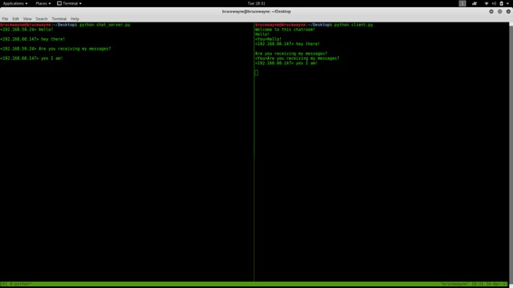

本文演示 - 如何设置一个简单的聊天室服务器，并允许多个客户端使用客户端脚本连接到它。 该代码使用套接字和线程的概念。
套接字编程
套接字可以被认为是双向通信信道中的端点，并且在服务器和一个或多个客户端之间建立通信。 在这里，我们在每端设置一个套接字，允许客户端通过服务器与其他客户端进行交互。 服务器端的套接字将自身与服务器端的某个硬件端口关联。 具有与同一端口关联的套接字的任何客户端都可以与服务器套接字通信。
多线程
线程是子进程，它分别运行任何其他线程的一组命令。 因此，每次用户连接到服务器时，都会为该用户创建一个单独的线程，并且从服务器到客户端的通信将根据为了每个客户端的身份而创建的套接字对象沿着各个线程进行。
我们将需要两个脚本来建立这个聊天室。 一个用于保持服务运行，另一个用于运行每个客户端以连接到服务器。
服务器端脚本
服务器端脚本将尝试建立套接字并将其绑定到用户指定的IP地址和端口（Windows用户可能必须在其防火墙设置中对指定的端口号进行例外处理，或者可以使用的端口是已经开放）。 然后，脚本将保持打开状态并接收连接请求，并将相应的套接字对象附加到列表以跟踪活动连接。 每次用户连接时，
将为该用户创建一个单独的线程。 在每个线程中，服务器等待消息，并将该消息发送给当前正在聊天的其他用户。 如果服务器在尝试从特定线程接收消息时遇到错误，它将退出该线程。
用法
通过选择任何计算机作为服务器节点，并使用该计算机的专用IP地址作为服务器IP地址，可以在局域网上设置此服务器。
例如，如果局域网具有一组分配的范围从192.168.1.2到192.168.1.100的私有IP地址，则来自这99个节点的任何计算机都可以充当服务器，其余节点可以通过以下方式连接到服务器节点：使用服务器的私有IP地址。 必须注意选择当前未使用的端口。 例如，端口22是ssh的默认端口，端口80是HTTP协议的默认端口。 因此，最好不要使用或重新配置这两个端口以使其可以自由使用。
但是，如果要在本地网络之外访问服务器，则需要使用公共IP地址。 如果来自本地网络的节点（不是路由器的节点）希望托管服务器，则需要端口转发。 在这种情况下，我们要求将来到公共IP地址的任何请求重新路由到我们本地网络中的私有IP地址，因此需要端口转发。
有关端口转发的更多信息： 链接
要运行该脚本，只需从帖子底部指定的GitHub链接下载它，并将其保存在计算机上方便的位置。
/* Both the server and client script can then be run from the Command prompt (in Windows) or from bash Terminal (Linux users) by simply typing "python chat_server.py " or "python client.py ". For example, */ python chat_server.py 192.168.55.13 8081 python client.py 192.168.55.13 8081
下面是服务器端脚本，必须始终运行以保持聊天室运行。
# Python program to implement server side of chat room.
import socket
import select
import sys
from thread import *
"""The first argument AF_INET is the address domain of the
socket. This is used when we have an Internet Domain with
any two hosts The second argument is the type of socket.
SOCK_STREAM means that data or characters are read in
a continuous flow."""
server = socket.socket(socket.AF_INET, socket.SOCK_STREAM)
server.setsockopt(socket.SOL_SOCKET, socket.SO_REUSEADDR, 1)
# checks whether sufficient arguments have been provided
if len(sys.argv) != 3:
print "Correct usage: script, IP address, port number"
exit()
# takes the first argument from command prompt as IP address
IP_address = str(sys.argv[1])
# takes second argument from command prompt as port number
Port = int(sys.argv[2])
"""
binds the server to an entered IP address and at the
specified port number.
The client must be aware of these parameters
"""
server.bind((IP_address, Port))
"""
listens for 100 active connections. This number can be
increased as per convenience.
"""
server.listen(100)
list_of_clients = []
def clientthread(conn, addr):
# sends a message to the client whose user object is conn
conn.send("Welcome to this chatroom!")
while True:
try:
message = conn.recv(2048)
if message:
"""prints the message and address of the
user who just sent the message on the server
terminal"""
print "<" + addr[0] + "> " + message
# Calls broadcast function to send message to all
message_to_send = "<" + addr[0] + "> " + message
broadcast(message_to_send, conn)
else:
"""message may have no content if the connection
is broken, in this case we remove the connection"""
remove(conn)
except:
continue
"""Using the below function, we broadcast the message to all
clients who's object is not the same as the one sending
the message """
def broadcast(message, connection):
for clients in list_of_clients:
if clients!=connection:
try:
clients.send(message)
except:
clients.close()
# if the link is broken, we remove the client
remove(clients)
"""The following function simply removes the object
from the list that was created at the beginning of
the program"""
def remove(connection):
if connection in list_of_clients:
list_of_clients.remove(connection)
while True:
"""Accepts a connection request and stores two parameters,
conn which is a socket object for that user, and addr
which contains the IP address of the client that just
connected"""
conn, addr = server.accept()
"""Maintains a list of clients for ease of broadcasting
a message to all available people in the chatroom"""
list_of_clients.append(conn)
# prints the address of the user that just connected
print addr[0] + " connected"
# creates and individual thread for every user
# that connects
start_new_thread(clientthread,(conn,addr))
conn.close()
server.close()
客户端脚本
客户端脚本将只是尝试访问在指定IP地址和端口创建的服务器套接字。 一旦连接，它将不断检查输入是来自服务器还是来自客户端，并相应地重定向输出。 如果输入来自服务器，它将在终端上显示消息。 如果输入来自用户，则它将用户输入的消息发送到服务器，以便将其广播给其他用户。
这是客户端脚本，每个用户必须使用该脚本才能连接到服务器。
# Python program to implement client side of chat room.
import socket
import select
import sys
server = socket.socket(socket.AF_INET, socket.SOCK_STREAM)
if len(sys.argv) != 3:
print "Correct usage: script, IP address, port number"
exit()
IP_address = str(sys.argv[1])
Port = int(sys.argv[2])
server.connect((IP_address, Port))
while True:
# maintains a list of possible input streams
sockets_list = [sys.stdin, server]
""" There are two possible input situations. Either the
user wants to give manual input to send to other people,
or the server is sending a message to be printed on the
screen. Select returns from sockets_list, the stream that
is reader for input. So for example, if the server wants
to send a message, then the if condition will hold true
below.If the user wants to send a message, the else
condition will evaluate as true"""
read_sockets,write_socket, error_socket = select.select(sockets_list,[],[])
for socks in read_sockets:
if socks == server:
message = socks.recv(2048)
print message
else:
message = sys.stdin.readline()
server.send(message)
sys.stdout.write("<You>")
sys.stdout.write(message)
sys.stdout.flush()
server.close()
输出：在下面给出的图片中，服务器已在终端的左侧初始化，客户端脚本在终端的右侧。 （使用tmux完成终端的拆分，'sudo apt-get install tmux'）。 出于初始化目的，您可以看到无论何时用户发送消息，消息以及IP地址都显示在服务器端。

{kind=link}
下图在同一台服务器上的两个人之间进行了基本对话。 多个客户端可以以相同的方式连接到服务器！
链接到下载脚本： 链接